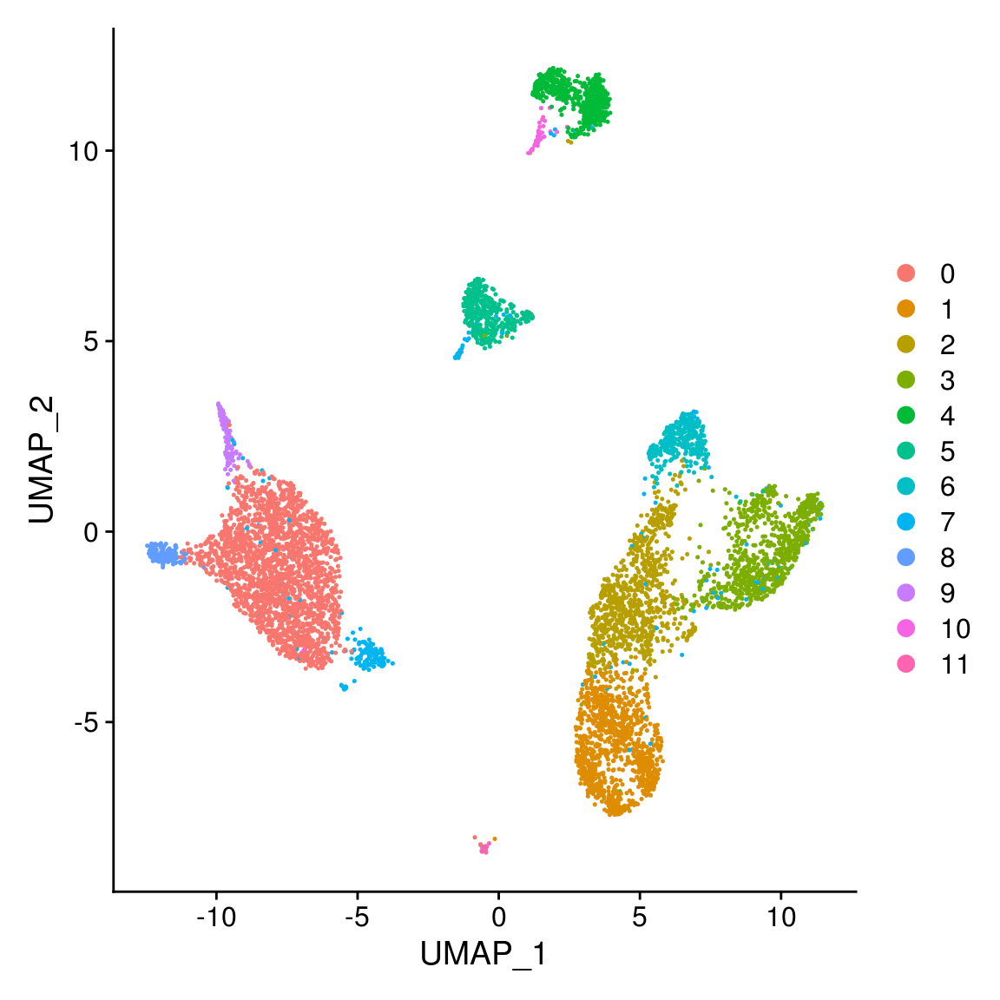
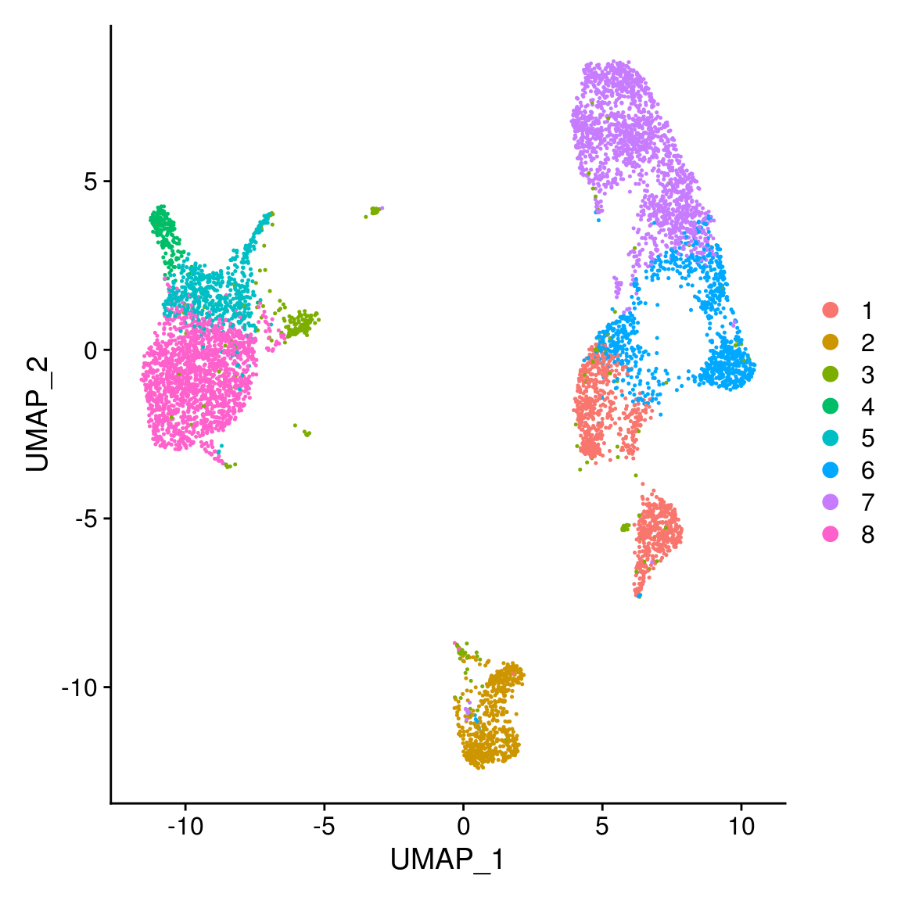

scATAC-pro Downstream analysis in R
1 Introduction
scATAC-pro generates results in plain texts, tables and .rds objects. This tutorial shows how some modules can be re-run using different options or parameters. We will use 10x PBMC 10x data as in the manuscript, except for the integrate module, where data from another study was used for illustration purpose. Download pbmc10x_scATACpro_output data to reproduce this tutorial.
1.1 Set up parameters, scATAC-pro output dir and source raw codes
library(data.table)
library(magrittr)
library(ggplot2)
library(Seurat)
library(RColorBrewer)
library(viridis)
PEAK_CALLER = 'COMBINED'
CELL_CALLER = 'FILTER'
output_dir = 'pbmc10x_scATACpro_output/'
down_dir = paste0(output_dir, 'downstream_analysis/', PEAK_CALLER, '/',
CELL_CALLER, '/')
devtools::source_url("https://github.com/wbaopaul/scATAC-pro/blob/master/scripts/src/dsAnalysis_utilities.R?raw=TRUE")2 Reanalyze data alternatively
2.1 Clustering
2.1.1 Reclustering using seurat implemented louvain algorithm with different parameters
You can also re-cluster the cells with different number of reduced dimension or resolutions, for example
seurat_obj = readRDS(paste0(down_dir, 'seurat_obj.rds'))
seurat_obj <- RunPCA(seurat_obj, npcs = 20)
seurat_obj <- FindNeighbors(seurat_obj, reduction = 'pca', dims = 1:20)
seurat_obj <- FindClusters(seurat_obj, resolution = 0.4)
## Modularity Optimizer version 1.3.0 by Ludo Waltman and Nees Jan van Eck
##
## Number of nodes: 6783
## Number of edges: 257994
##
## Running Louvain algorithm...
## Maximum modularity in 10 random starts: 0.9244
## Number of communities: 12
## Elapsed time: 0 seconds
seurat_obj$active_clusters = seurat_obj$seurat_clusters
DimPlot(seurat_obj)
If you want to cluster the data into k clusters, 8 for instance, we provided a query function which helps you looking for the corresponding resolution parameter.
resl <- queryResolution4Seurat(seurat_obj, k = 8, reduction = 'pca',
npc = 20, min_resl = 0.1, max_resl = 1,
max_iter = 15)
seurat_obj <- FindClusters(seurat_obj, resolution = resl)
## Modularity Optimizer version 1.3.0 by Ludo Waltman and Nees Jan van Eck
##
## Number of nodes: 6783
## Number of edges: 257994
##
## Running Louvain algorithm...
## Maximum modularity in 10 random starts: 0.9719
## Number of communities: 8
## Elapsed time: 0 seconds
seurat_obj$active_clusters = seurat_obj$seurat_clusters
DimPlot(seurat_obj)
2.1.2 Reclustering using different methods
You can recluster the data by different methods, such as kmeans ( generalCluster function), cisTopic (run_cisTopic), scABC (run_scABC), SCRAT (run_scrat) and chromVAR (run_chromVAR).
2.1.2.1 Further filter matrix
mtx <- filterMat(mtx, minFrac_in_cell = 0.01, min_depth = 1000, max_depth = 50000)
## create a new seurat obj for visualize and other analysis
seurat_obj.new <- runSeurat_Atac(mtx, npc = 20, norm_by = 'tf-idf',
top_variable_features = 5000, reg.var = 'nCount_ATAC')
seurat_obj.new <- RunUMAP(seurat_obj.new, dims = 1:20)2.1.2.2 SCRAT
2.1.2.3 cisTopic
This method will take a while.
cisTopic.obj <- run_cisTopic(mtx, nCores = 5, topic = c(10, 20, 30, 50, 100),
frac_in_cell = 0.05)
## select the best model and lda as a new dimension reduction the seurat obj
sele.model <- cisTopic::selectModel(cisTopic.obj, select = nREDUCTION,
keepBinaryMatrix = F, keepModels = F)
cell_topic <- t(modelMatSelection(sele.model, 'cell', 'Probability'))
cl.labels = generalCluster(cell_topic, method = 'hclust', k = 8)
seurat_obj.new[['lda']] <- CreateDimReducObject(embeddings = cell_topic,
key = '_Topic', assay = DefaultAssay(seurat_obj.new))
## You can run umap or clustering on lda by specifying reduction='lda'
seurat_obj.new <- RunUMAP(seurat_obj.new, dims = 1:ncol(cell_topic), reduction = 'lda')
seurat_obj.new <- FindNeighbors(seurat_obj.new, reduction = 'lda', dims = 1:ncol(cell_topic))
seurat_obj.new <- FindClusters(seurat_obj.new, resolution = 0.4)
seurat_obj.new$active_clusters = seurat_obj.new$seurat_cluster
DimPlot(seurat_obj.new)2.1.2.4 kmeans (on PCs)
2.1.2.5 chromVAR
## if you have already run motif analysis, chromvar obj was saved and
chromVar.obj <- readRDS(paste0(down_dir, '/chromVar_obj.rds'))
## otherwise
#chromVar.obj <- run_chromVAR(mtx, genomeName = 'BSgenome.Hsapiens.UCSC.hg38', ncore = 4)
zscore = chromVar.obj@assays@data$z
zscore = zscore[, colnames(zscore) %in% colnames(mtx)]
pca_coords = doDimReduction4mat(zscore, max_pc = 20)[[1]]
cl.labels = cutree(hclust(dist(pca_coords)), k = 8)2.1.2.7 LSI
This is the original LSI method (the first PC was discarded), and you can specify different number of PCs and filter peaks

2.2 Motif Analysis
Compare TF enrichment among clusters. You can rerun chromVar or using original chromVar object (saved in .rds) and using updated clustering results.
## if you have already run motif analysis, chromvar obj was saved and
chromVar.obj <- readRDS(paste0(down_dir, '/chromVar_obj.rds'))
## otherwise to re-run chromvar
#chromVar.obj <- run_chromVAR(mtx, genomeName = 'BSgenome.Hsapiens.UCSC.hg38', ncore = 4)
zscores = chromVar.obj@assays@data$z
dscores = chromVar.obj@assays@data$deviations
dscores = dscores[, colnames(dscores) %in% colnames(mtx)]
zscores = zscores[, colnames(zscores) %in% colnames(mtx)]
bc_clusters = data.table('barcode' = colnames(mtx),
'cluster' = seurat_obj.new$active_clusters)
tf.diff <- runDiffMotifEnrich(dscores, bc_clusters, topn = 10,
min_frac_per_cluster = 0.1, fdr = 0.01,
max_cell_per_clust = 300)
sele.zscores = zscores[tf.diff$feature, ]
## change rowname of zscores (tf name) to be readable
sele.zscores <- readable_tf(sele.zscores, 'hg38')
sele.zscores = sele.zscores[!duplicated(sele.zscores), ]
plot_enrich_tf(sele.zscores, bc_clusters)
2.3 Differential accessible analysis
Update soon…
2.4 GO analysis
Update soon…
2.5 Integration analysis
Update soon…